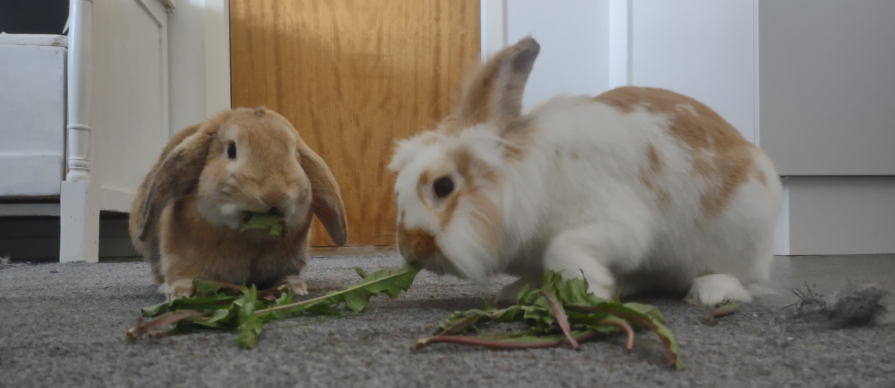
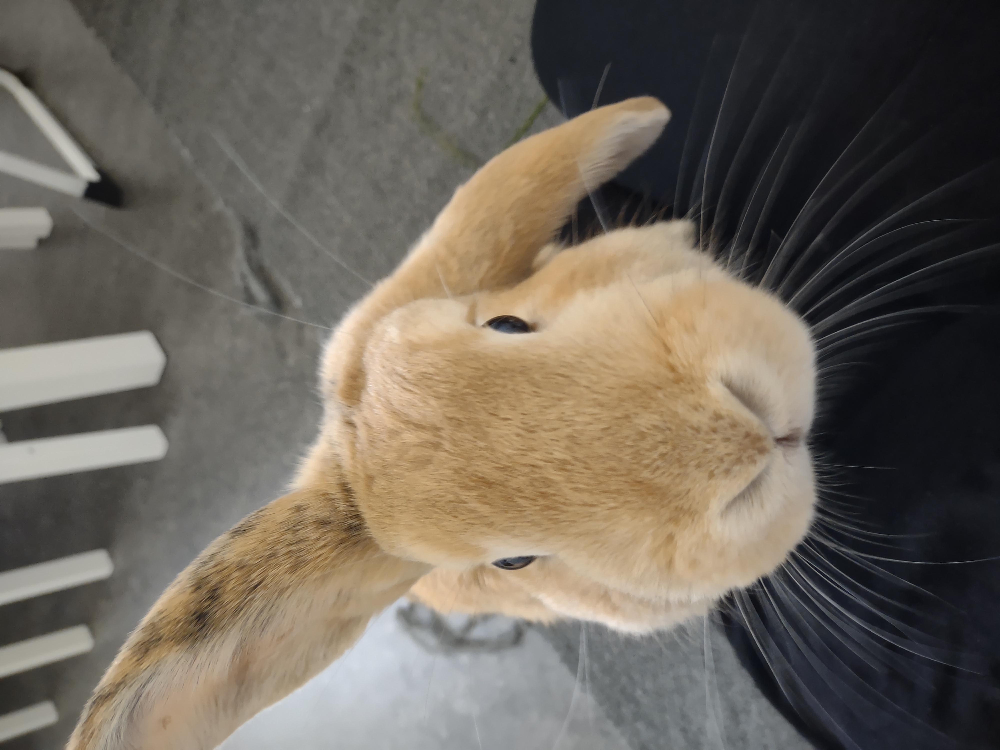
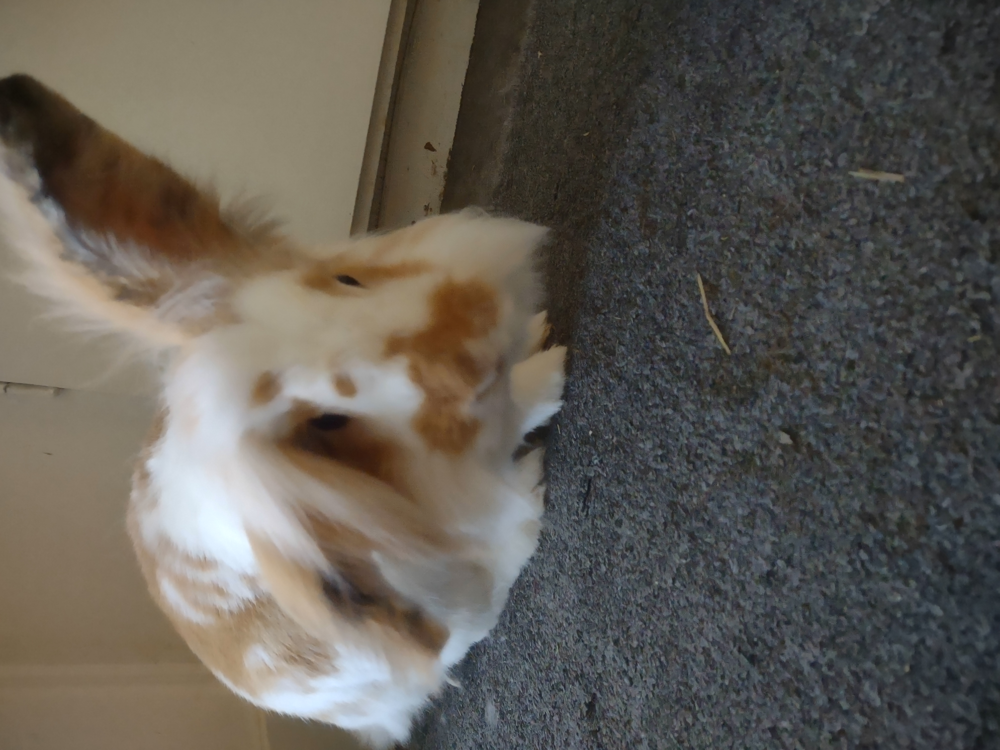

Bamse
Bamse är en fin kanin. Han är bror till Toffee. Bamse gillar mat väldigt mycket. Det är därför han heter Bamse. När han var liten åt han upp både sin egen mat och syskonens mat och blev störst av alla syskon.

Två kaniner

Bamse är en fin kanin. Han är bror till Toffee. Bamse gillar mat väldigt mycket. Det är därför han heter Bamse. När han var liten åt han upp både sin egen mat och syskonens mat och blev störst av alla syskon.
Toffee är en fin kanin. Han ser ut som en toffee-karamell, kolafärgad och gräddfärgad. Toffee har ett lite jobbigt liv. Han behöver nämligen hålla reda på Bamse väldigt mycket. Jaga iväg honom när det är matdags och putsa honom när han är smutsig.
